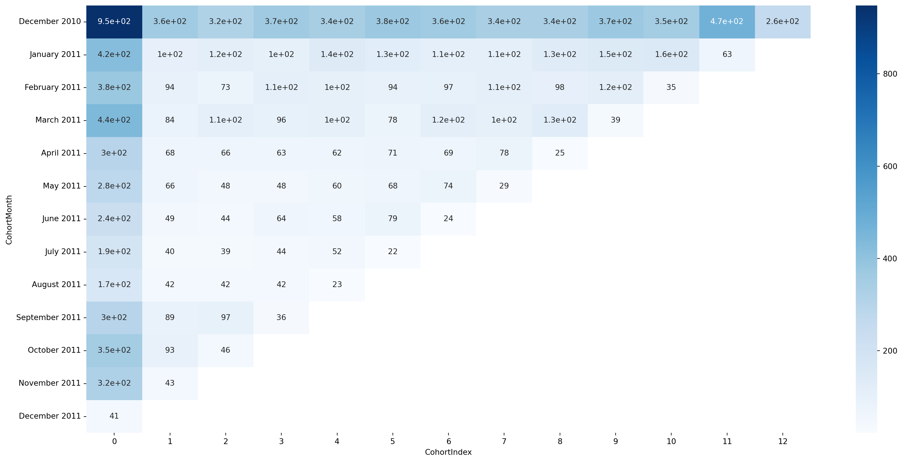
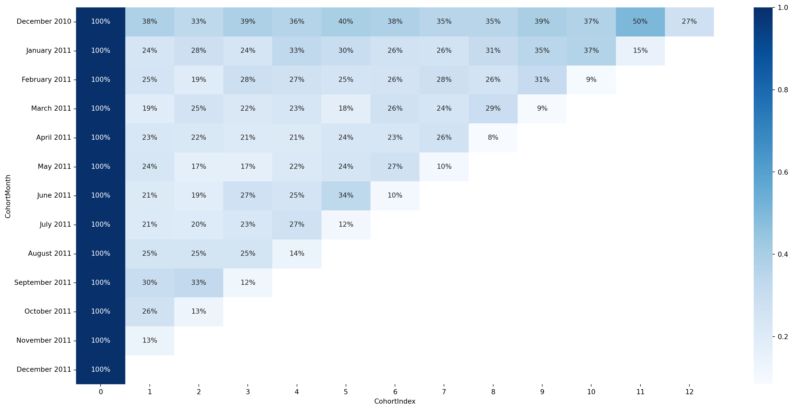
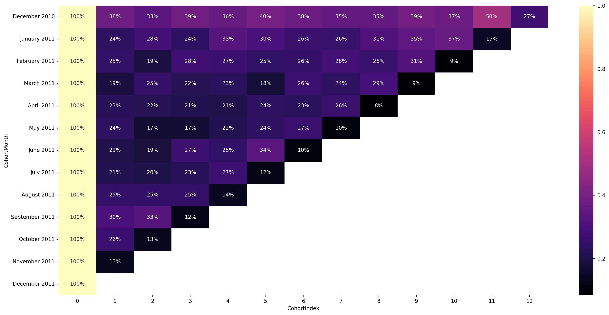

show the code
import pandas as pd
import numpy as np
from pandas import read_csv
import seaborn as sns
import matplotlib.pyplot as plt
import datetime as dtAdeyeye Seyi Joseph
April 6, 2026
| InvoiceNo | StockCode | Description | Quantity | InvoiceDate | UnitPrice | CustomerID | Country | |
|---|---|---|---|---|---|---|---|---|
| 0 | 536365 | 85123A | WHITE HANGING HEART T-LIGHT HOLDER | 6 | 2010-12-01 08:26:00 | 2.55 | 17850.0 | United Kingdom |
| 1 | 536365 | 71053 | WHITE METAL LANTERN | 6 | 2010-12-01 08:26:00 | 3.39 | 17850.0 | United Kingdom |
| 2 | 536365 | 84406B | CREAM CUPID HEARTS COAT HANGER | 8 | 2010-12-01 08:26:00 | 2.75 | 17850.0 | United Kingdom |
| 3 | 536365 | 84029G | KNITTED UNION FLAG HOT WATER BOTTLE | 6 | 2010-12-01 08:26:00 | 3.39 | 17850.0 | United Kingdom |
| 4 | 536365 | 84029E | RED WOOLLY HOTTIE WHITE HEART. | 6 | 2010-12-01 08:26:00 | 3.39 | 17850.0 | United Kingdom |
| 5 | 536365 | 22752 | SET 7 BABUSHKA NESTING BOXES | 2 | 2010-12-01 08:26:00 | 7.65 | 17850.0 | United Kingdom |
| 6 | 536365 | 21730 | GLASS STAR FROSTED T-LIGHT HOLDER | 6 | 2010-12-01 08:26:00 | 4.25 | 17850.0 | United Kingdom |
| 7 | 536366 | 22633 | HAND WARMER UNION JACK | 6 | 2010-12-01 08:28:00 | 1.85 | 17850.0 | United Kingdom |
| 8 | 536366 | 22632 | HAND WARMER RED POLKA DOT | 6 | 2010-12-01 08:28:00 | 1.85 | 17850.0 | United Kingdom |
| 9 | 536367 | 84879 | ASSORTED COLOUR BIRD ORNAMENT | 32 | 2010-12-01 08:34:00 | 1.69 | 13047.0 | United Kingdom |
<class 'pandas.core.frame.DataFrame'>
RangeIndex: 541909 entries, 0 to 541908
Data columns (total 8 columns):
# Column Non-Null Count Dtype
--- ------ -------------- -----
0 InvoiceNo 541909 non-null object
1 StockCode 541909 non-null object
2 Description 540455 non-null object
3 Quantity 541909 non-null int64
4 InvoiceDate 541909 non-null datetime64[ns]
5 UnitPrice 541909 non-null float64
6 CustomerID 406829 non-null float64
7 Country 541909 non-null object
dtypes: datetime64[ns](1), float64(2), int64(1), object(4)
memory usage: 33.1+ MB<class 'pandas.core.frame.DataFrame'>
Index: 406829 entries, 0 to 541908
Data columns (total 8 columns):
# Column Non-Null Count Dtype
--- ------ -------------- -----
0 InvoiceNo 406829 non-null object
1 StockCode 406829 non-null object
2 Description 406829 non-null object
3 Quantity 406829 non-null int64
4 InvoiceDate 406829 non-null datetime64[ns]
5 UnitPrice 406829 non-null float64
6 CustomerID 406829 non-null float64
7 Country 406829 non-null object
dtypes: datetime64[ns](1), float64(2), int64(1), object(4)
memory usage: 27.9+ MB<class 'pandas.core.frame.DataFrame'>
Index: 406829 entries, 0 to 541908
Data columns (total 9 columns):
# Column Non-Null Count Dtype
--- ------ -------------- -----
0 InvoiceNo 406829 non-null object
1 StockCode 406829 non-null object
2 Description 406829 non-null object
3 Quantity 406829 non-null int64
4 InvoiceDate 406829 non-null datetime64[ns]
5 UnitPrice 406829 non-null float64
6 CustomerID 406829 non-null float64
7 Country 406829 non-null object
8 InvoiceMonth 406829 non-null datetime64[ns]
dtypes: datetime64[ns](2), float64(2), int64(1), object(4)
memory usage: 31.0+ MB| InvoiceNo | StockCode | Description | Quantity | InvoiceDate | UnitPrice | CustomerID | Country | InvoiceMonth | CohortMonth | |
|---|---|---|---|---|---|---|---|---|---|---|
| 0 | 536365 | 85123A | WHITE HANGING HEART T-LIGHT HOLDER | 6 | 2010-12-01 08:26:00 | 2.55 | 17850.0 | United Kingdom | 2010-12-01 | 2010-12-01 |
| 1 | 536365 | 71053 | WHITE METAL LANTERN | 6 | 2010-12-01 08:26:00 | 3.39 | 17850.0 | United Kingdom | 2010-12-01 | 2010-12-01 |
| 2 | 536365 | 84406B | CREAM CUPID HEARTS COAT HANGER | 8 | 2010-12-01 08:26:00 | 2.75 | 17850.0 | United Kingdom | 2010-12-01 | 2010-12-01 |
| 3 | 536365 | 84029G | KNITTED UNION FLAG HOT WATER BOTTLE | 6 | 2010-12-01 08:26:00 | 3.39 | 17850.0 | United Kingdom | 2010-12-01 | 2010-12-01 |
| 4 | 536365 | 84029E | RED WOOLLY HOTTIE WHITE HEART. | 6 | 2010-12-01 08:26:00 | 3.39 | 17850.0 | United Kingdom | 2010-12-01 | 2010-12-01 |
| 5 | 536365 | 22752 | SET 7 BABUSHKA NESTING BOXES | 2 | 2010-12-01 08:26:00 | 7.65 | 17850.0 | United Kingdom | 2010-12-01 | 2010-12-01 |
| 6 | 536365 | 21730 | GLASS STAR FROSTED T-LIGHT HOLDER | 6 | 2010-12-01 08:26:00 | 4.25 | 17850.0 | United Kingdom | 2010-12-01 | 2010-12-01 |
| 7 | 536366 | 22633 | HAND WARMER UNION JACK | 6 | 2010-12-01 08:28:00 | 1.85 | 17850.0 | United Kingdom | 2010-12-01 | 2010-12-01 |
| 8 | 536366 | 22632 | HAND WARMER RED POLKA DOT | 6 | 2010-12-01 08:28:00 | 1.85 | 17850.0 | United Kingdom | 2010-12-01 | 2010-12-01 |
| 9 | 536367 | 84879 | ASSORTED COLOUR BIRD ORNAMENT | 32 | 2010-12-01 08:34:00 | 1.69 | 13047.0 | United Kingdom | 2010-12-01 | 2010-12-01 |
| 10 | 536367 | 22745 | POPPY'S PLAYHOUSE BEDROOM | 6 | 2010-12-01 08:34:00 | 2.10 | 13047.0 | United Kingdom | 2010-12-01 | 2010-12-01 |
| 11 | 536367 | 22748 | POPPY'S PLAYHOUSE KITCHEN | 6 | 2010-12-01 08:34:00 | 2.10 | 13047.0 | United Kingdom | 2010-12-01 | 2010-12-01 |
| 12 | 536367 | 22749 | FELTCRAFT PRINCESS CHARLOTTE DOLL | 8 | 2010-12-01 08:34:00 | 3.75 | 13047.0 | United Kingdom | 2010-12-01 | 2010-12-01 |
| 13 | 536367 | 22310 | IVORY KNITTED MUG COSY | 6 | 2010-12-01 08:34:00 | 1.65 | 13047.0 | United Kingdom | 2010-12-01 | 2010-12-01 |
| 14 | 536367 | 84969 | BOX OF 6 ASSORTED COLOUR TEASPOONS | 6 | 2010-12-01 08:34:00 | 4.25 | 13047.0 | United Kingdom | 2010-12-01 | 2010-12-01 |
| 15 | 536367 | 22623 | BOX OF VINTAGE JIGSAW BLOCKS | 3 | 2010-12-01 08:34:00 | 4.95 | 13047.0 | United Kingdom | 2010-12-01 | 2010-12-01 |
| 16 | 536367 | 22622 | BOX OF VINTAGE ALPHABET BLOCKS | 2 | 2010-12-01 08:34:00 | 9.95 | 13047.0 | United Kingdom | 2010-12-01 | 2010-12-01 |
| 17 | 536367 | 21754 | HOME BUILDING BLOCK WORD | 3 | 2010-12-01 08:34:00 | 5.95 | 13047.0 | United Kingdom | 2010-12-01 | 2010-12-01 |
| 18 | 536367 | 21755 | LOVE BUILDING BLOCK WORD | 3 | 2010-12-01 08:34:00 | 5.95 | 13047.0 | United Kingdom | 2010-12-01 | 2010-12-01 |
| 19 | 536367 | 21777 | RECIPE BOX WITH METAL HEART | 4 | 2010-12-01 08:34:00 | 7.95 | 13047.0 | United Kingdom | 2010-12-01 | 2010-12-01 |
| 20 | 536367 | 48187 | DOORMAT NEW ENGLAND | 4 | 2010-12-01 08:34:00 | 7.95 | 13047.0 | United Kingdom | 2010-12-01 | 2010-12-01 |
| 21 | 536368 | 22960 | JAM MAKING SET WITH JARS | 6 | 2010-12-01 08:34:00 | 4.25 | 13047.0 | United Kingdom | 2010-12-01 | 2010-12-01 |
| 22 | 536368 | 22913 | RED COAT RACK PARIS FASHION | 3 | 2010-12-01 08:34:00 | 4.95 | 13047.0 | United Kingdom | 2010-12-01 | 2010-12-01 |
| 23 | 536368 | 22912 | YELLOW COAT RACK PARIS FASHION | 3 | 2010-12-01 08:34:00 | 4.95 | 13047.0 | United Kingdom | 2010-12-01 | 2010-12-01 |
| 24 | 536368 | 22914 | BLUE COAT RACK PARIS FASHION | 3 | 2010-12-01 08:34:00 | 4.95 | 13047.0 | United Kingdom | 2010-12-01 | 2010-12-01 |
| 25 | 536369 | 21756 | BATH BUILDING BLOCK WORD | 3 | 2010-12-01 08:35:00 | 5.95 | 13047.0 | United Kingdom | 2010-12-01 | 2010-12-01 |
| 26 | 536370 | 22728 | ALARM CLOCK BAKELIKE PINK | 24 | 2010-12-01 08:45:00 | 3.75 | 12583.0 | France | 2010-12-01 | 2010-12-01 |
| 27 | 536370 | 22727 | ALARM CLOCK BAKELIKE RED | 24 | 2010-12-01 08:45:00 | 3.75 | 12583.0 | France | 2010-12-01 | 2010-12-01 |
| 28 | 536370 | 22726 | ALARM CLOCK BAKELIKE GREEN | 12 | 2010-12-01 08:45:00 | 3.75 | 12583.0 | France | 2010-12-01 | 2010-12-01 |
| 29 | 536370 | 21724 | PANDA AND BUNNIES STICKER SHEET | 12 | 2010-12-01 08:45:00 | 0.85 | 12583.0 | France | 2010-12-01 | 2010-12-01 |
0 12
1 12
2 12
3 12
4 12
5 12
6 12
7 12
8 12
9 12
Name: InvoiceMonth, dtype: int32
0 12
1 12
2 12
3 12
4 12
5 12
6 12
7 12
8 12
9 12
Name: CohortMonth, dtype: int32InvoiceNo object
StockCode object
Description object
Quantity int64
InvoiceDate datetime64[ns]
UnitPrice float64
CustomerID Int64
Country object
InvoiceMonth datetime64[ns]
CohortMonth datetime64[ns]
dtype: object| CohortMonth | CohortIndex | CustomerID | |
|---|---|---|---|
| 0 | 2010-12-01 | 0 | 948 |
| 1 | 2010-12-01 | 1 | 362 |
| 2 | 2010-12-01 | 2 | 317 |
| 3 | 2010-12-01 | 3 | 367 |
| 4 | 2010-12-01 | 4 | 341 |
| ... | ... | ... | ... |
| 86 | 2011-10-01 | 1 | 93 |
| 87 | 2011-10-01 | 2 | 46 |
| 88 | 2011-11-01 | 0 | 321 |
| 89 | 2011-11-01 | 1 | 43 |
| 90 | 2011-12-01 | 0 | 41 |
91 rows × 3 columns
| CohortIndex | 0 | 1 | 2 | 3 | 4 | 5 | 6 | 7 | 8 | 9 | 10 | 11 | 12 |
|---|---|---|---|---|---|---|---|---|---|---|---|---|---|
| CohortMonth | |||||||||||||
| 2010-12-01 | 948.0 | 362.0 | 317.0 | 367.0 | 341.0 | 376.0 | 360.0 | 336.0 | 336.0 | 374.0 | 354.0 | 474.0 | 260.0 |
| 2011-01-01 | 421.0 | 101.0 | 119.0 | 102.0 | 138.0 | 126.0 | 110.0 | 108.0 | 131.0 | 146.0 | 155.0 | 63.0 | NaN |
| 2011-02-01 | 380.0 | 94.0 | 73.0 | 106.0 | 102.0 | 94.0 | 97.0 | 107.0 | 98.0 | 119.0 | 35.0 | NaN | NaN |
| 2011-03-01 | 440.0 | 84.0 | 112.0 | 96.0 | 102.0 | 78.0 | 116.0 | 105.0 | 127.0 | 39.0 | NaN | NaN | NaN |
| 2011-04-01 | 299.0 | 68.0 | 66.0 | 63.0 | 62.0 | 71.0 | 69.0 | 78.0 | 25.0 | NaN | NaN | NaN | NaN |
| 2011-05-01 | 279.0 | 66.0 | 48.0 | 48.0 | 60.0 | 68.0 | 74.0 | 29.0 | NaN | NaN | NaN | NaN | NaN |
| 2011-06-01 | 235.0 | 49.0 | 44.0 | 64.0 | 58.0 | 79.0 | 24.0 | NaN | NaN | NaN | NaN | NaN | NaN |
| 2011-07-01 | 191.0 | 40.0 | 39.0 | 44.0 | 52.0 | 22.0 | NaN | NaN | NaN | NaN | NaN | NaN | NaN |
| 2011-08-01 | 167.0 | 42.0 | 42.0 | 42.0 | 23.0 | NaN | NaN | NaN | NaN | NaN | NaN | NaN | NaN |
| 2011-09-01 | 298.0 | 89.0 | 97.0 | 36.0 | NaN | NaN | NaN | NaN | NaN | NaN | NaN | NaN | NaN |
| 2011-10-01 | 352.0 | 93.0 | 46.0 | NaN | NaN | NaN | NaN | NaN | NaN | NaN | NaN | NaN | NaN |
| 2011-11-01 | 321.0 | 43.0 | NaN | NaN | NaN | NaN | NaN | NaN | NaN | NaN | NaN | NaN | NaN |
| 2011-12-01 | 41.0 | NaN | NaN | NaN | NaN | NaN | NaN | NaN | NaN | NaN | NaN | NaN | NaN |
| CohortIndex | 0 | 1 | 2 | 3 | 4 | 5 | 6 | 7 | 8 | 9 | 10 | 11 | 12 |
|---|---|---|---|---|---|---|---|---|---|---|---|---|---|
| CohortMonth | |||||||||||||
| December 2010 | 948.0 | 362.0 | 317.0 | 367.0 | 341.0 | 376.0 | 360.0 | 336.0 | 336.0 | 374.0 | 354.0 | 474.0 | 260.0 |
| January 2011 | 421.0 | 101.0 | 119.0 | 102.0 | 138.0 | 126.0 | 110.0 | 108.0 | 131.0 | 146.0 | 155.0 | 63.0 | NaN |
| February 2011 | 380.0 | 94.0 | 73.0 | 106.0 | 102.0 | 94.0 | 97.0 | 107.0 | 98.0 | 119.0 | 35.0 | NaN | NaN |
| March 2011 | 440.0 | 84.0 | 112.0 | 96.0 | 102.0 | 78.0 | 116.0 | 105.0 | 127.0 | 39.0 | NaN | NaN | NaN |
| April 2011 | 299.0 | 68.0 | 66.0 | 63.0 | 62.0 | 71.0 | 69.0 | 78.0 | 25.0 | NaN | NaN | NaN | NaN |
| May 2011 | 279.0 | 66.0 | 48.0 | 48.0 | 60.0 | 68.0 | 74.0 | 29.0 | NaN | NaN | NaN | NaN | NaN |
| June 2011 | 235.0 | 49.0 | 44.0 | 64.0 | 58.0 | 79.0 | 24.0 | NaN | NaN | NaN | NaN | NaN | NaN |
| July 2011 | 191.0 | 40.0 | 39.0 | 44.0 | 52.0 | 22.0 | NaN | NaN | NaN | NaN | NaN | NaN | NaN |
| August 2011 | 167.0 | 42.0 | 42.0 | 42.0 | 23.0 | NaN | NaN | NaN | NaN | NaN | NaN | NaN | NaN |
| September 2011 | 298.0 | 89.0 | 97.0 | 36.0 | NaN | NaN | NaN | NaN | NaN | NaN | NaN | NaN | NaN |
| October 2011 | 352.0 | 93.0 | 46.0 | NaN | NaN | NaN | NaN | NaN | NaN | NaN | NaN | NaN | NaN |
| November 2011 | 321.0 | 43.0 | NaN | NaN | NaN | NaN | NaN | NaN | NaN | NaN | NaN | NaN | NaN |
| December 2011 | 41.0 | NaN | NaN | NaN | NaN | NaN | NaN | NaN | NaN | NaN | NaN | NaN | NaN |

| CohortIndex | 0 | 1 | 2 | 3 | 4 | 5 | 6 | 7 | 8 | 9 | 10 | 11 | 12 |
|---|---|---|---|---|---|---|---|---|---|---|---|---|---|
| CohortMonth | |||||||||||||
| December 2010 | 1.0 | 0.381857 | 0.334388 | 0.387131 | 0.359705 | 0.396624 | 0.379747 | 0.354430 | 0.354430 | 0.394515 | 0.373418 | 0.500000 | 0.274262 |
| January 2011 | 1.0 | 0.239905 | 0.282660 | 0.242280 | 0.327791 | 0.299287 | 0.261283 | 0.256532 | 0.311164 | 0.346793 | 0.368171 | 0.149644 | NaN |
| February 2011 | 1.0 | 0.247368 | 0.192105 | 0.278947 | 0.268421 | 0.247368 | 0.255263 | 0.281579 | 0.257895 | 0.313158 | 0.092105 | NaN | NaN |
| March 2011 | 1.0 | 0.190909 | 0.254545 | 0.218182 | 0.231818 | 0.177273 | 0.263636 | 0.238636 | 0.288636 | 0.088636 | NaN | NaN | NaN |
| April 2011 | 1.0 | 0.227425 | 0.220736 | 0.210702 | 0.207358 | 0.237458 | 0.230769 | 0.260870 | 0.083612 | NaN | NaN | NaN | NaN |
| May 2011 | 1.0 | 0.236559 | 0.172043 | 0.172043 | 0.215054 | 0.243728 | 0.265233 | 0.103943 | NaN | NaN | NaN | NaN | NaN |
| June 2011 | 1.0 | 0.208511 | 0.187234 | 0.272340 | 0.246809 | 0.336170 | 0.102128 | NaN | NaN | NaN | NaN | NaN | NaN |
| July 2011 | 1.0 | 0.209424 | 0.204188 | 0.230366 | 0.272251 | 0.115183 | NaN | NaN | NaN | NaN | NaN | NaN | NaN |
| August 2011 | 1.0 | 0.251497 | 0.251497 | 0.251497 | 0.137725 | NaN | NaN | NaN | NaN | NaN | NaN | NaN | NaN |
| September 2011 | 1.0 | 0.298658 | 0.325503 | 0.120805 | NaN | NaN | NaN | NaN | NaN | NaN | NaN | NaN | NaN |
| October 2011 | 1.0 | 0.264205 | 0.130682 | NaN | NaN | NaN | NaN | NaN | NaN | NaN | NaN | NaN | NaN |
| November 2011 | 1.0 | 0.133956 | NaN | NaN | NaN | NaN | NaN | NaN | NaN | NaN | NaN | NaN | NaN |
| December 2011 | 1.0 | NaN | NaN | NaN | NaN | NaN | NaN | NaN | NaN | NaN | NaN | NaN | NaN |


The largest customer attrition occurred immediately after the first purchase, indicating that many customers did not return for a second purchase.Customer retention declined progressively across successive cohort periods, demonstrating a natural reduction in repeat purchasing behavior over time. Earlier cohorts generally exhibited stronger long-term retention than later cohorts, suggesting possible changes in customer acquisition quality or engagement effectiveness.
A core chunk of loyal customers remained active across multiple months, providing evidence of sustained customer value among retained users.
The retention heatmap revealed that customer engagement was strongest during the acquisition month and weakened significantly in subsequent months.Churn rates increased with cohort age, indicating that the probability of customer inactivity grew as time elapsed from the first purchase.
Strengthen post-purchase engagements ( such as feedback, customer satifaction surveys etc)
Introduce loyalty and rewards programs & deploy targeted retention and re-activation campaigns/initiatives.
Personalize customer communications & continuously monitor cohort and churn metrics to measure improvements.
The original Online Retail datasets can be accessed on the UCI Machine Learning Repo here:
---
title: "Cohorts Analysis"
format:
html:
code-fold: true
code-tools: true
code-summary: "show the code"
description: "A Cohort(churn) Analysis of UCI Irvine Machine Learning Repo Data (Online Retail)"
author: "Adeyeye Seyi Joseph"
date: "04/06/2026"
categories:
- Business
- cohorts
- Churn
- Attrition
---
{width="640" height="427"}
```{python}
import pandas as pd
import numpy as np
from pandas import read_csv
import seaborn as sns
import matplotlib.pyplot as plt
import datetime as dt
```
```{python}
df = pd.read_excel("C:\\Users\\hp\\Desktop\\python\\Tuts_fold\\Absent\\Online Retail.xlsx")
df.head(10)
```
```{python}
# skim to see the basic info:
df.info()
```
```{python}
# drop rows that contains NAs:
df = df.dropna(subset =["CustomerID"])
df.info()
```
```{python}
# Creating a custom function to get date field:
import datetime as dt
def get_month(x):
return dt.datetime(x.year, x.month,1)
```
```{python}
# applying the custom func
df["InvoiceMonth"] = df["InvoiceDate"].apply(get_month)
df.info()
```
```{python}
# create a column index with the minimum invoiceMonth aka, the first time customer was acquired :
df["CohortMonth"] = df.groupby("CustomerID")["InvoiceMonth"].transform("min")
df.head(30)
```
```{python}
# Create a custom func to get a Series for subtration:
def get_date_elements(df, column):
day = df[column].dt.day
month = df[column].dt.month
year = df[column].dt.year
return day, month, year
```
```{python}
# Get date elements for Invoice & Cohort cols:
_, Invoice_month, Invoice_year = get_date_elements(df, "InvoiceMonth")
_, Cohort_month, Cohort_year = get_date_elements(df, "CohortMonth")
```
```{python}
# check and see the output of one of the Series ( simply a one-dimensional column):
print(Invoice_month[:10])
print(Cohort_month[:10])
```
```{python}
# casting our CustomerID col (float) to get rid of the ".0":
df["CustomerID"] = df["CustomerID"].astype("Int64")
print(df.dtypes)
```
```{python}
# create a cohort index
# one (1) may be added to our computation of (year_diff*12 + month_diff + 1) is optional /so we #can omitt it
year_diff = Invoice_year - Cohort_year
month_diff = Invoice_month - Cohort_month
df['CohortIndex'] = year_diff*12 + month_diff
```
```{python}
# count the customerId by grouping by cohort month & cohort
cohort_data = df.groupby(['CohortMonth', 'CohortIndex'])['CustomerID'].apply(pd.Series.nunique).reset_index()
cohort_data
```
```{python}
# create a pivot table from the cohort data:
cohort_pivot = cohort_data.pivot(
index = 'CohortMonth', columns = ['CohortIndex'], values = 'CustomerID'
)
cohort_pivot
```
```{python}
#change index of the cohort_data to be neatly displayed:
cohort_pivot.index = cohort_pivot.index.strftime("%B %Y")
cohort_pivot
```
```{python}
# visualizing via an heatmap:
plt.figure(figsize=(21,10))
sns.heatmap(cohort_pivot, annot=True, cmap="Blues")
```
```{python}
# Dividing our cohort pivot table to obtain cohort sizes :
new_cohort_table = cohort_pivot.divide(cohort_pivot.iloc[:, 0], axis=0)
new_cohort_table
```
```{python}
# create visual (i.e heatmap ) & format for pct values:
plt.figure(figsize=(21,10))
sns.heatmap(new_cohort_table, annot=True, cmap="Blues", fmt=".0%")
```
```{python}
# create visual (i.e heatmap ) & format for pct values (with different colour grading):
plt.figure(figsize=(21,10))
sns.heatmap(new_cohort_table, annot=True, cmap="magma", fmt=".0%")
```
## Summary of findings:
1. The largest customer attrition occurred immediately after the first purchase, indicating that many customers did not return for a second purchase.Customer retention declined progressively across successive cohort periods, demonstrating a natural reduction in repeat purchasing behavior over time.
Earlier cohorts generally exhibited stronger long-term retention than later cohorts, suggesting possible changes in customer acquisition quality or engagement effectiveness.
2. A core chunk of loyal customers remained active across multiple months, providing evidence of sustained customer value among retained users.
3. The retention heatmap revealed that customer engagement was strongest during the acquisition month and weakened significantly in subsequent months.Churn rates increased with cohort age, indicating that the probability of customer inactivity grew as time elapsed from the first purchase.
## Recommendations:
1. Strengthen post-purchase engagements ( such as feedback, customer satifaction surveys etc)
2. Introduce loyalty and rewards programs & deploy targeted retention and re-activation campaigns/initiatives.
3. Personalize customer communications & continuously monitor cohort and churn metrics to measure improvements.
## Original Datasets:
[The original Online Retail datasets can be accessed on the UCI Machine Learning Repo here:](https://archive.ics.uci.edu/dataset/352/online+retail
){target="_blank"}